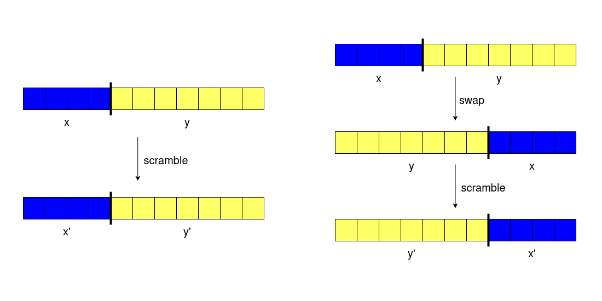
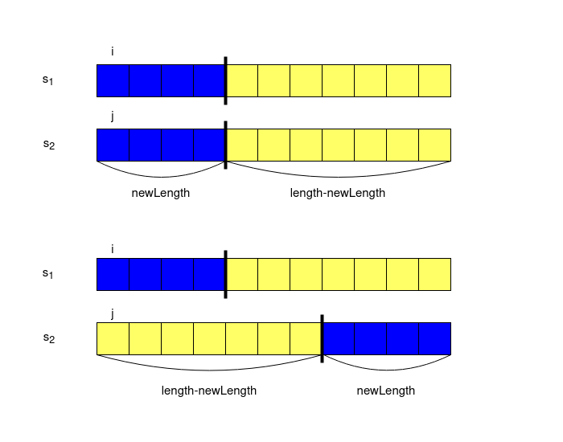

We have a recursive definition of scrambling a string s. First, we divide s into x and y. Then we either keep s as x + y or swap them and get y + x. After that, we scramble x and y independently. Let x' denote the scrambled x and y' denote the scrambled y. s will eventually become x' + y' or y' + x'.

How do we check whether a given string t is a scrambled string of s? First, we choose an index and cut s into x and y (s = x + y). Then, we see if we can cut t into x' and y' (t = x' + y' if we do not swap or t = y' + x' if we do). Since verifying that x' is a scrambled x and y' is scrambled y are smaller subproblems, we will solve the problem using dynamic programming.
We have two strings s1 and s2.
For each given dp state, we need 3 variables: length, i, and j.
Each state will focus on two substrings. The first one will be a substring of s1, starting at index i with length equal to length - let's call this substring s. The second one will be a substring of s2, starting at index j with length - let's call this substring t.
Let dp[length][i][j] be a boolean representing whether t is a scrambled version of s.
The base case, as defined by the problem is when length = 1. Here we do not have to split strings into smaller ones, so we can easily compare the corresponding characters: dp[1][i][j] is true when s1[i] equals s2[j], and false otherwise.
Now we need to write down the transitions of dp. We will use the following image as an example during the explanations.

At each state, we need to perform a split on s1. We will consider all possible splits. If we are currently considering a substring with a length of length, then we could perform a split at any index newLength, where 0 < newLength < length. (Here, newLength represents the length of the left string after the split). A split gives us two new strings:
A substring of s1 starting at index i and ending with index i + newLength - 1. This string has a length of newLength (Blue in the picture)
A substring of s1 starting at index i + newLength and ending at index i + length - 1. This string has a length of length - newLength. (Yellow in the picture)
For each split, we have two cases:
s2 must be scrambled versions of the substrings we just created by splitting s1. This means both dp[newLength][i][j] (representing the blue parts) and dp[length - newLength][i + newLength][j + newLength] (representing the yellow parts) must be true.s1 and s2, but we still need the parts to match (we still need the blue part of s1 to be a scrambled version of the blue part of s2, same with the yellow part). What are the new starting indices? For blue, it's s1 starting with i and s2 starting with j + length - newLength. For yellow, it's s1 starting with i + newLength and s2 starting with j. Thus, we need both dp[newLength][i][j+length-newLength] and dp[length-newLength][i+newLength][j] to be true.Now we can formally write down the transitions. For length > 1, dp[length][i][j] is true if and only if for at least one newLength where 0 < newLength < length:
(dp[newLength][i][j] && dp[length-newLength][i+newLength][j+newLength]) || (dp[newLength][i][j+length-newLength] && dp[length-newLength][i+newLength][j]) is true.
Let n denote the length of the input strings. The answer to the problem is dp[n][0][0], as starting at index 0 with length n is considering the entire input string.
i from 0 to n-1.
j from 0 to n-1.
dp[1][i][j] to the boolean value of s1[i] == s2[j]. (The base case of the DP).length from 2 to n.
i from 0 to n + 1 - length.
j from 0 to n + 1 - length.
newLength from 1 to length - 1.
dp[newLength][i][j] && dp[length-newLength][i+newLength][j+newLength]) || (dp[newLength][i][j+l-newLength] && dp[l-newLength][i+newLength][j] is true, set dp[length][i][j] to true.dp[n][0][0].Java
class Solution { public boolean isScramble(String s1, String s2) { int n = s1.length(); boolean dp[][][] = new boolean[n + 1][n][n]; for (int i = 0; i < n; i++) { for (int j = 0; j < n; j++) { dp[1][i][j] = s1.charAt(i) == s2.charAt(j); } } for (int length = 2; length <= n; length++) { for (int i = 0; i < n + 1 - length; i++) { for (int j = 0; j < n + 1 - length; j++) { for (int newLength = 1; newLength < length; newLength++) { boolean dp1[] = dp[newLength][i]; boolean dp2[] = dp[length - newLength][i + newLength]; dp[length][i][j] |= dp1[j] && dp2[j + newLength]; dp[length][i][j] |= dp1[j + length - newLength] && dp2[j]; } } } } return dp[n][0][0]; } }C++
class Solution { public: bool isScramble(string s1, string s2) { int n = s1.size(); vector dp(n + 1, vector(n, vector(n))); for (int i = 0; i < n; i++) { for (int j = 0; j < n; j++) { dp[1][i][j] = s1[i] == s2[j]; } } for (int length = 2; length <= n; length++) { for (int i = 0; i < n + 1 - length; i++) { for (int j = 0; j < n + 1 - length; j++) { for (int newLength = 1; newLength < length; newLength++) { const vector & dp1 = dp[newLength][i]; const vector & dp2 = dp[length - newLength][i + newLength]; dp[length][i][j] |= dp1[j] && dp2[j + newLength]; dp[length][i][j] |= dp1[j + length - newLength] && dp2[j]; } } } } return dp[n][0][0]; } }; Python3
class Solution: def isScramble(self, s1: str, s2: str) -> bool: n = len(s1) dp = [[[False for j in range(n)] for i in range(n)] for l in range(n+1)] for i in range(n): for j in range(n): dp[1][i][j] = s1[i] == s2[j] for length in range(2, n + 1): for i in range(n + 1 - length): for j in range(n + 1 - length): for new_length in range(1, length): dp1 = dp[new_length][i] dp2 = dp[length-new_length][i+new_length] dp[length][i][j] |= dp1[j] and dp2[j+new_length] dp[length][i][j] |= dp1[j+length-new_length] and dp2[j] return dp[n][0][0]
We have four nested for loops (for length, i, j, newLength), each doing O(n)O(n) iterations.
We store the matrix dp[n+1][n][n] for dynamic programming.